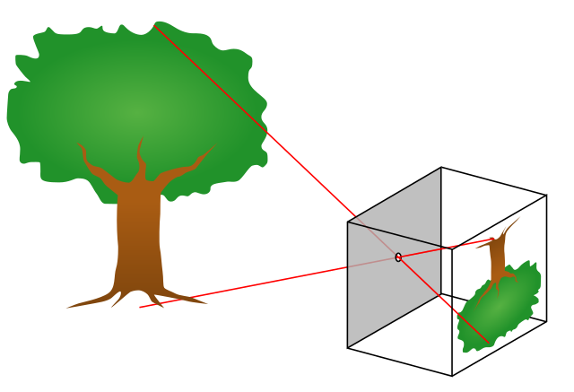

May 26, 2022
Pathtracing with WebGPU
It's that time of year again, where I begin yet another ill-advised venture into computer graphics. Hooray!
Today, we're going to be creating a renderer based on a technique known as pathtracing. You may have heard the terms "pathtracing" and "raytracing" thrown around an awful lot recently, and with good reason; pathtracing is one of the simplest yet most robust methods for rendering photorealistic images. Let's explore how they work.
Raytracing §
What even is raytracing? Recall that the geometric definition of a ray is basically half of a line; it starts at a point, and extends infinitely in one direction. To trace a ray means to determine where it hits the objects in your scene.
From here, we can imagine how raytracing could be used to render a 3D scene. Consider how a pinhole camera works in real life:

We can determine where the light hitting each point on the rear surface of the camera (the image plane) came from, because it had to have come through the pinhole. If we consider the pinhole to be extremely small (i.e. a point), we can draw a ray starting from the image plane and going through the pinhole into the scene.
The idea behind raytracing is actually fairly intuitive. Light travels in straight lines, after all, so we can use geometry to simulate rays of light moving throughout a scene to achieve highly realistic lighting effects using a fairly simple algorithm.
In case my sarcasm wasn't apparent, this is not the full picture. Light does not always travel in straight lines; it is a wave, meaning it is subject to funky behaviors such as diffraction and interference. However, the contribution of these effects to most scenes is minimal, so we can neglect them without noticeably affecting the fidelity of our renderer. Collectively, this set of simplifications is known as geometrical optics.